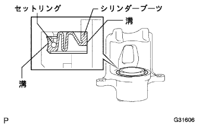

フロントブレーキ 組み付け |
| 1. フロントディスクブレーキ ブリーダ プラグ仮締め |
| 2. フロントディスクブレーキ ブリーダプラグ キャップ取り付け |
| 3. ピストンシール取り付け |
新品のピストンシールの全周にラバーグリースを塗布し、フロントディスクブレーキシリンダASSY LHの溝に確実に取り付ける。
| 4. フロントディスクブレーキ ピストン取り付け |
ディスクブレーキピストン外周にラバーグリースを薄く塗布し、フロントディスクブレーキシリンダASSY LHに取り付ける。
| 5. シリンダブーツ取り付け |
新品のシリンダブーツにラバーグリースを塗布し、フロントディスクブレーキシリンダASSY LHに取り付ける。
|  |
マイナス薄刃ドライバーを使用して、新品のフロントディスクブレーキピストンセットリングを取り付ける。